MatrixPotential1S¶
About the MatrixPotential1S class¶
The WaveBlocks Project
@author: R. Bourquin @copyright: Copyright (C) 2010, 2011, 2012, 2013, 2014, 2015 R. Bourquin @license: Modified BSD License
Inheritance diagram¶
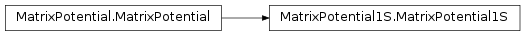
Class documentation¶
- class WaveBlocksND.MatrixPotential1S(expression, variables, **kwargs)¶
This class represents a scalar potential
 . The potential is
given as an analytic 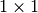 matrix expression. Some symbolic
calculations with the potential are supported.
. The potential is
given as an analytic 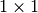 matrix expression. Some symbolic
calculations with the potential are supported.- calculate_eigenvalues()¶
Calculate the eigenvalue
 of the potential .
In the scalar case this is just equal to the matrix entry
of the potential .
In the scalar case this is just equal to the matrix entry  .
Note: This function is idempotent and the eigenvalues are memoized for later reuse.
.
Note: This function is idempotent and the eigenvalues are memoized for later reuse.
- calculate_eigenvectors()¶
Calculate the eigenvector
 of the potential .
In the scalar case this is just the value
of the potential .
In the scalar case this is just the value  .
Note: This function is idempotent and the eigenvectors are memoized for later reuse.
.
Note: This function is idempotent and the eigenvectors are memoized for later reuse.
- calculate_exponential(factor=1)¶
Calculate the matrix exponential
 . In the
case of this class the matrix is of size thus
the exponential simplifies to the scalar exponential function.
Note: This function is idempotent.
. In the
case of this class the matrix is of size thus
the exponential simplifies to the scalar exponential function.
Note: This function is idempotent.Parameters: factor – The prefactor  in the exponential.
in the exponential.
- calculate_hessian()¶
Calculate the Hessian matrix 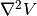 of the potential
with  . For potentials which depend only one variable,
this equals the second derivative and
. For potentials which depend only one variable,
this equals the second derivative and  . Note that this function is idempotent.
. Note that this function is idempotent.
- calculate_jacobian()¶
Calculate the Jacobian matrix
 of the potential
with . For potentials which depend only one variable,
this equals the first derivative and . Note that this function is idempotent.
of the potential
with . For potentials which depend only one variable,
this equals the first derivative and . Note that this function is idempotent.
- calculate_local_quadratic(diagonal_component=None)¶
Calculate the local quadratic approximation
 of the potential’s
eigenvalue 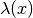. Note that this function is idempotent.
of the potential’s
eigenvalue 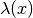. Note that this function is idempotent.Parameters: diagonal_component – Dummy parameter that has no effect here.
- calculate_local_remainder(diagonal_component=None)¶
Calculate the non-quadratic remainder 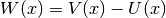 of the quadratic Taylor approximation
of the potential’s eigenvalue .
Note that this function is idempotent.Parameters: diagonal_component – Dummy parameter that has no effect here.
- evaluate_at(grid, entry=None, as_matrix=False)¶
Evaluate the potential
elementwise on a grid  .
.Parameters: - grid (A Grid instance. (Numpy arrays are not directly supported yet.)) – The grid containing the nodes
 we want
to evaluate the potential at.
we want
to evaluate the potential at. - entry (A python tuple of two integers.) – The indices
 of the component
of the component  we want to evaluate or None to evaluate all entries.
This has no effect here as we only have a single entry 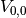.
we want to evaluate or None to evaluate all entries.
This has no effect here as we only have a single entry 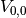. - as_matrix – Dummy parameter which has no effect here.
Returns: A list containing a single numpy ndarray of shape
 .
.- grid (A Grid instance. (Numpy arrays are not directly supported yet.)) – The grid containing the nodes
- evaluate_eigenvalues_at(grid, entry=None, as_matrix=False)¶
Evaluate the eigenvalue
elementwise on a grid .Parameters: - grid (A Grid instance. (Numpy arrays are not directly supported yet.)) – The grid containing the nodes we want
to evaluate the eigenvalue at.
- entry (A python tuple of two integers.) – The indices of the component
 we want to evaluate or None to evaluate all entries. If 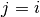
then we evaluate the eigenvalue
we want to evaluate or None to evaluate all entries. If 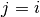
then we evaluate the eigenvalue  . This has no
effect here as we only have a single entry
. This has no
effect here as we only have a single entry  .
. - as_matrix – Dummy parameter which has no effect here.
Returns: A list containing a single numpy ndarray of shape
 .
.- grid (A Grid instance. (Numpy arrays are not directly supported yet.)) – The grid containing the nodes
- evaluate_eigenvectors_at(grid, entry=None)¶
Evaluate the eigenvector
elementwise on a grid .Parameters: - grid (A Grid instance. (Numpy arrays are not directly supported yet.)) – The grid containing the nodes we want
to evaluate the eigenvector at.
- entry (A singly python integer.) – The index
 of the eigenvector
of the eigenvector  we want to evaluate or None to evaluate all eigenvectors.
This has no effect here as we only have a single entry
we want to evaluate or None to evaluate all eigenvectors.
This has no effect here as we only have a single entry  .
.
Returns: A list containing the numpy ndarrays, all of shape
 .
.- grid (A Grid instance. (Numpy arrays are not directly supported yet.)) – The grid containing the nodes
- evaluate_exponential_at(grid, entry=None)¶
Evaluate the exponential of the potential matrix
on a grid .Parameters: grid (A Grid instance. (Numpy arrays are not directly supported yet.)) – The grid containing the nodes we want
to evaluate the exponential at.Returns: The numerical approximation of the matrix exponential at the given grid nodes.
- evaluate_hessian_at(grid, component=None)¶
Evaluate the potential’s Hessian 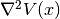 at some grid nodes
.Parameters: - grid – The grid nodes the Hessian gets evaluated at.
- component – Dummy parameter that has no effect here.
Returns: The value of the potential’s Hessian at the given nodes. The result is an ndarray of shape
 is we evaluate at a single
grid node or of shape 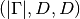 if we evaluate at multiple
nodes simultaneously.
is we evaluate at a single
grid node or of shape 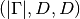 if we evaluate at multiple
nodes simultaneously.- grid – The grid nodes
- evaluate_jacobian_at(grid, component=None)¶
Evaluate the potential’s Jacobian
 at some grid
nodes .
at some grid
nodes .Parameters: - grid – The grid nodes the Jacobian gets evaluated at.
- component – Dummy parameter that has no effect here.
Returns: The value of the potential’s Jacobian at the given nodes. The result is an ndarray of shape
 is we evaluate at a single
grid node or of shape
is we evaluate at a single
grid node or of shape  if we evaluate at multiple nodes simultaneously.
if we evaluate at multiple nodes simultaneously.- grid – The grid nodes
- evaluate_local_quadratic_at(grid, diagonal_component=None)¶
Numerically evaluate the local quadratic approximation
of
the potential’s eigenvalue at the given grid nodes .
This function is used for the homogeneous case.Parameters: - grid – The grid nodes the quadratic approximation gets evaluated at.
- diagonal_component – Dummy parameter that has no effect here.
Returns: A list containing the values
 , 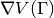 and
, 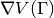 and
 .
.- grid – The grid nodes
- evaluate_local_remainder_at(grid, position, diagonal_component=None, entry=None)¶
Numerically evaluate the non-quadratic remainder
 of the quadratic
approximation of the potential’s eigenvalue at the
given nodes .
of the quadratic
approximation of the potential’s eigenvalue at the
given nodes .Parameters: - grid – The grid nodes the remainder
 gets evaluated at.
gets evaluated at. - position – The point 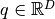 where the Taylor series is computed.
- diagonal_component – Dummy parameter that has no effect here.
- entry – Dummy parameter that has no effect here.
Returns: A list with a single entry consisting of an ndarray containing the values of 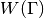. The array is of shape
.- grid – The grid nodes
- get_dimension()¶
Return the dimension
 of the potential .
The dimension is equal to the number of free variables
of the potential .
The dimension is equal to the number of free variables  where
where  .
.
- get_number_components()¶
Return the number
 of components the potential
supports. This is equivalent to the number of energy levels .
of components the potential
supports. This is equivalent to the number of energy levels .